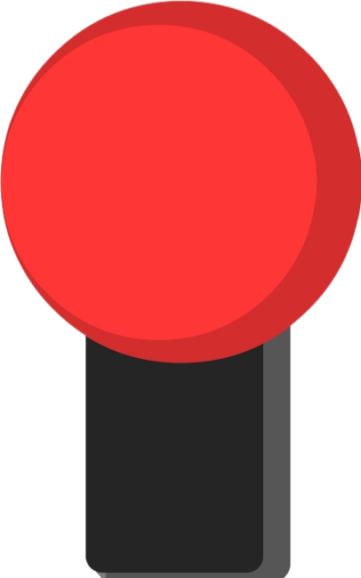
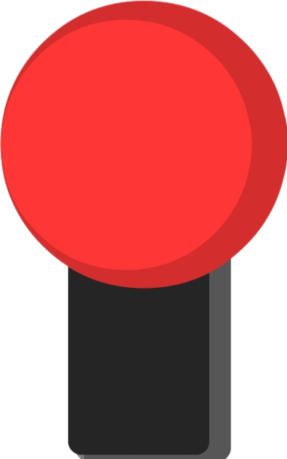
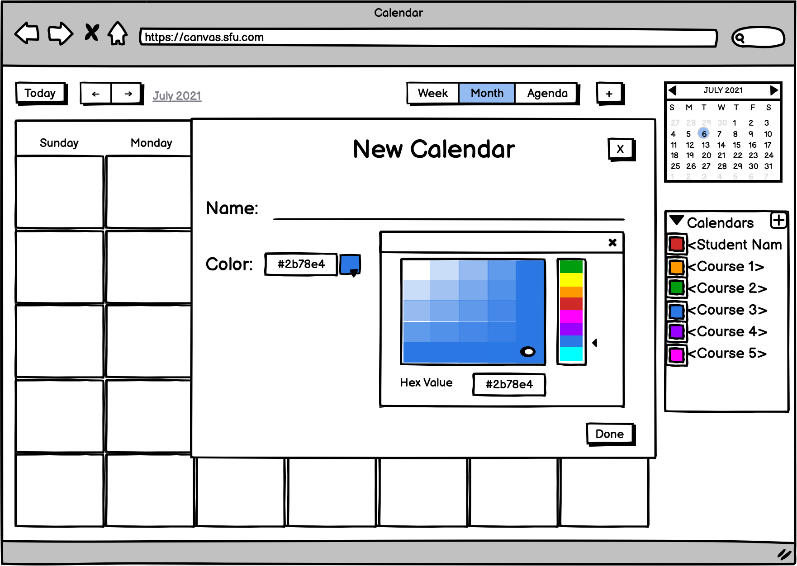
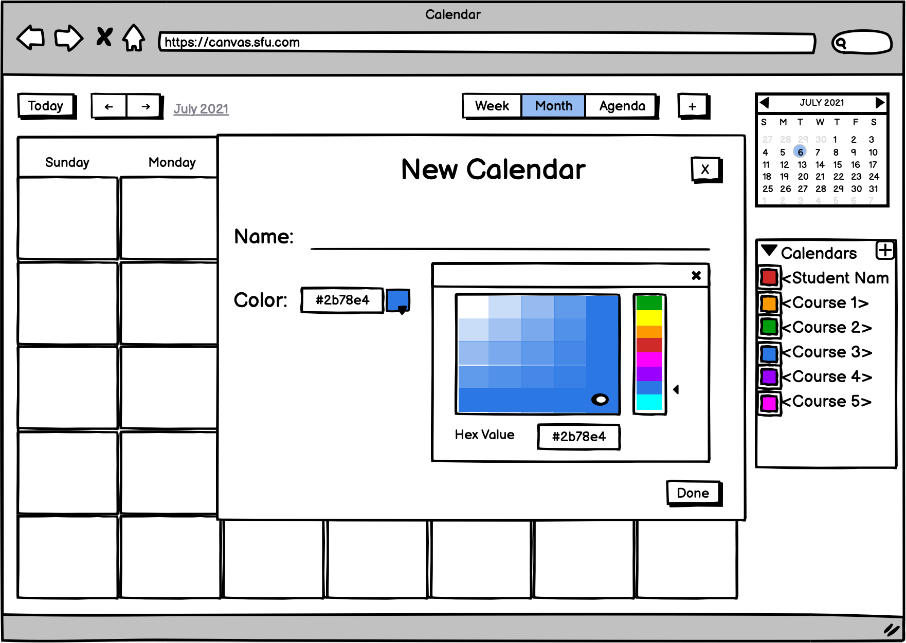
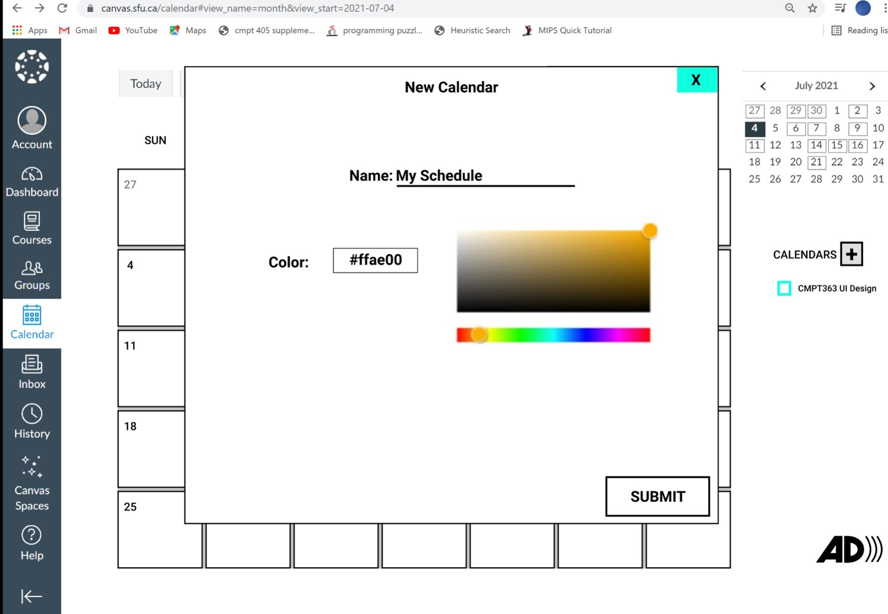
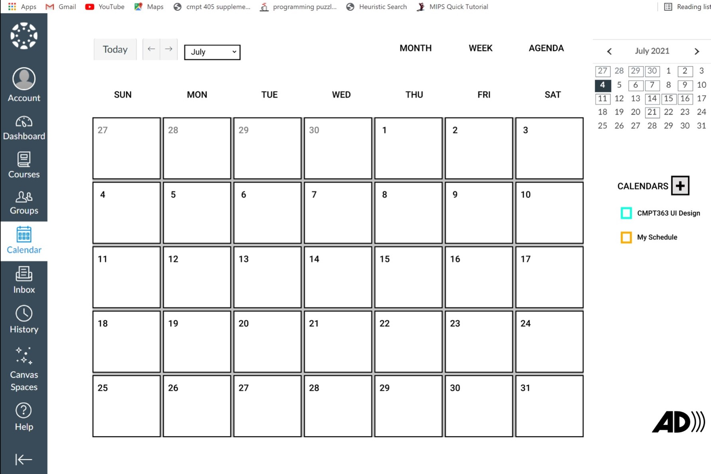
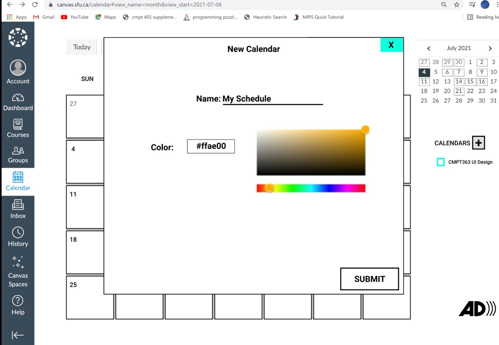
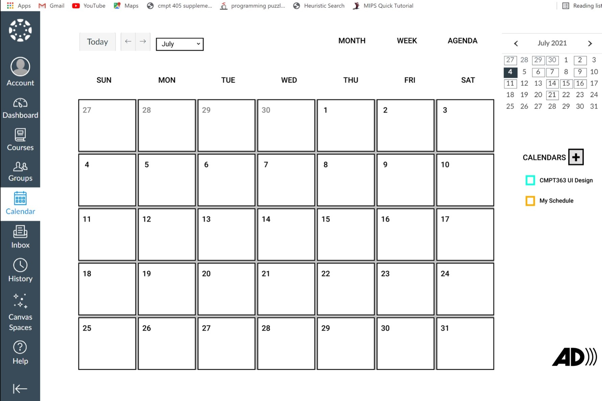

LEMON FARM
This was an individual project done in an 'Introduction to Software Engineering' course.
Android Studio along with Java was used to create a custom themed mine sweeper game. 100% of
the application theme, frontend development and backend programming was done in the span of
two weeks.
Additional features including background music, button sound effects and animation were
added for a more immersive gameplay.
You can take a further look at the following link: github.com/Lemon-Farm
COVID-19 TRACKER
This Covid-19 tracker was an individual project done in a 'Client Side Development' course.
Angular, leaflet map API and an instructor-provided storage server was used to create a fully functional
web application to keep track of the number of Covid-19 cases in all locations on the map.
The storage server was taken down by the instructor, so the web application no longer works. However,
below are some images that showcase the overall look and functionalities of the web application.
In order to report a new Covid-19 case, the user must select a place. If the place is not on the list, the user may add a new place.
Once the specific place is added, it will show up in the list of places. After selecting the place, a form asking for the individual's information is shown.

After filling the information out, the user can then submit the new report. The new report will show up on the list of cases below.
To view the information of the individual who has Covid-19, the 'More Info' button may be clicked to retrieve their information. To remove a case from the list, the user may click the 'Remove' Button.

CALENDAR DESIGN
This was a project from a UI design course. In a group of 5, we took a look at the SFU Canvas calendar
to create changes that would create a more inclusive and efficient calendar layout.
To do so, we had 3 iterations.
- Come up with the Good vs Bad design
-
Choose 3 functional and non-functional requirements we want to add to the interface
- Create a low fidelity prototype in Balsamiq
- Create a medium fidelity prototype in Figma
- Gather user experience reviews
We will take a look at each iteration below.
Iteration 1
Good Design
- Overall design is very clear and simple
- A confirmation pop-up appears when deleting an event for error prevention
Bad Design
- Lack of indication on how to hide specific courses
- User is unable to add a new calendar
- Lack of flexibility in choosing specific months
Iteration 2
3 Functional Requirements
- Make choosing months more efficient
- Showing/hiding a calendar should be more apparent to the user; User should have an easier way to choose calendar colour
- User should be able to add their own calendar and add events to that calendar
3 Non-Functional Requirements
- User should not be able to add events to calendars they do not own (i.e., only instructors have access to adding/deleting/changing events on course calendar)
- User should be able to use keyboard shortcuts to navigate the interface
- Have an option to read aloud calendar elements for visually impaired users
Low Fidelity Prototype
- Clicking on the month/year button in the top-left corner of the screen allows the user to quickly navigate to a different month for a given year
- With the addition of a square icon next to a course (or calendar name), the user can easily hide or show the calendar events.
- The square "plus" icon next to the "Calendars" heading in the side panel allows the user to create a new calendar group, with a selected color.
 

Medium Fidelity Prototype
Original View
The following keyboard shortcuts are supported:
- Press "j" or "n" to go to the next month
- Press "2" or "w" to go to week view
- Press "3" or "m" to go to month view
- Press "c" to create a new calendar
- Press "e" to see event details
Below is an example of what pressing "2" or "w" would look like
To add a new calendar, user simply has to click the square "plus" icon next to teh "Calendars" heading in the side panel.
 



Iteration 3
We held a cognitive walkthrough of our medium fidelity prototype and gave our user the following scenario:
"You are a 1st year student attending SFU. You have chosen your classes and have signed up for a club. Looking at
your calendar, you notice that the club is not showing up because it is not an official course at SFU. So, you
decide to add a new calendar to represent the club."
We then gave the user 5 actions to complete without telling them the exact buttons to click.
- Get "Add New Calendar" pop-up to display
- Cancel adding a new calendar
- Submit new calendar
- Hide/show one of current calendars
- Select January as the current month
Overall, the user had no difficulties carrying out each task. Our prototype had very apparent and well placed functionalities. We also used icons that people are familiar with. However, the user did take some time figuring out that the month/year had a drop down menu. If we had another iterations down the line, we would take these results and make efficient changes.
SHAPE TRACKER
In a group of 3, we wanted to train and test 4 machine learning models for shape detection.
TOOLS:
We gathered linear acceleration data and gravitational force data using the Physics
Toolbox Sensor Suite app. The linear acceleration data allows us to record the change of direction
and the g-force data produces cleaner images that we can visually see when the data is graphed.
SAMPLES:
We had participants physically move their phone to draw the predetermined shapes (O, S, V). Each
participant went through the following steps:
- Hold the phone flat, phone screen facing up
- Each shape should be drawn within a 15x10in canvas (LxW)
- Move phone at constant speed; Finish each shape under 5 seconds
For each shape, we had the following rules:
- Start at the top left when drawing V
- Start at the top center and move clockwise when drawing O
- Start at top right when drawing S
Each participant used their dominant hand and non-dominant hand to draw all 3 shapes multiple times for variations.
The gathered data was cleaned by calculating the optimal standard deviations from the peaks and valleys of each shape.
4 MODELS:
- Gaussian (Naïve Bayes) Classifier: We were not too interested in this model because it was not performing as well as the other 3 models. Hence, we did not tune the function for optimal results.
- K-Neighbors Classifier: This classifier had an accuracy score of 0.78. With n values less than 7, the accuracy score decreased, and was at its best when we set n to 10.
- Neural Network Classifier: This classifier had an accuracy score of 0.84. With hidden units greater than 6, it performed significantly worse. With smaller alpha values, the accuracy increased. After some playing around with the parameters, we found that this classifier worked best with 1 hidden layer, 6 hidden units and 1e-3 alpha value.
- Random Forest Classifier: This had an accuracy score of 0.94. Both the criterion Gini and Entropy resulted in high accuracy scores. However, entropy was chosen because the scores remained steady. Gini produced great results, but had some fluctuations in the scores and was not as consistent.
Overall, we found the Random Forest Classifier to be the optimal model for shape detection.
LIMITATIONS & EXTENSIONS:
- Collect more data points
- Participants had various ways of holding their phone (i.e., how much their phone was tilting upward/downward)
- A template of each shape to draw would have made the procedure easier for the participants
Above are some limitations we experienced. Making everyone hold their phones the exact same way and making
everyone draw each shape the exact same way would definitely increase the accuracy of each model, when
classifying each shape into their categories. However, it would reduce the "real-world" variance
the model would be trained on. So, there definitely exists a trade-off, but with our project, we were aiming to
determine the best model a developer could use to classify each shape to later create an application. This application
could allow the user to draw a shape that would then trigger another application or function. For instance, drawing the "V" shape
could dial "MOM".
You can take a further look at the following link: github.com/Shape-Detector
Hello! My name is Goeun Jang, currently a computer science major and cognitive science minor at Simon Fraser University. Hopefully, you had a fun time exploring some of my projects in an interactive way. If you would like to make further connections, below are my contact information.
Email: goeunj@sfu.caPhone: (778)-378-5105